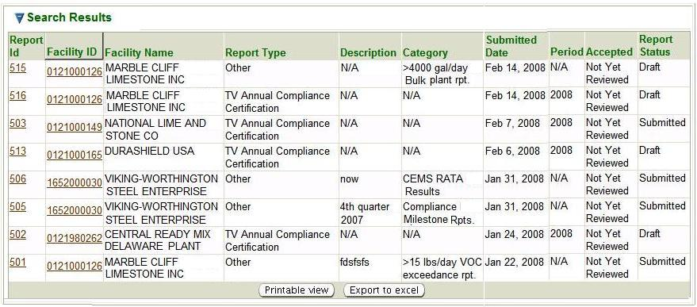

Compliance Report Search is the initial page you see when you select the Compliance Reports tab.
However, you may also get to the Compliance Reports Search page in the second-level menu from
any page within the Compliance Reports tab no matter how you reached that page. This is a standard
search page, as described in Common Search Paradigm.
The Search Criteria and Result List for this search are described below.
You may search for a compliance report on the basis of any or all of the criteria listed below.
You can
fill in or choose a value for whichever fields you want to use to restrict your search.
Facility ID: enter a FAC ID or a partial FAC ID
and * or % in any position as a wildcard (example: 012*, %012504, or *0125*, etc.)
to filter for compliance reports for an
individual facility or group of facilities.
Facility Name: enter the whole name or a partial name
and * or % in any position as a
wildcard (example: An*, %Anh or *Anh*, etc.) to filter for compliance reports for an
individual facility or group of facilities.
Report Type: select from a pick list
of report type values:
TV Compliance Certification,
Permit Evaluation Report, and
Other.
Compliance Report Dates: you can further refine your search by a
range of dates when the reports were submitted or a range of dates when the
reports were reviewed. This option begins by selecting
Reviewed or
Submitted. from the
By Date pick list.
This allows you to then enter data into the
Begin Date and
End Date fields. These are specified by
entering a date in
[m]m/[d]d/[yy]yy format or by selecting a date
from the
provided next to the field.
Status: select from a pick list of two
possible status values:
Submitted or
Draft.
Draft
is only an option for reports that are in the process of being
electronically entered by Ohio EPA from hard copy submittals.
This would not be applicable to
TV Annual Compliance Certifications which require electronic submission by the external user.
Accepted:
select from a pick list of four possible levels of acceptance:
No-Revisions Requested, or
No,
Yes, or
Not Yet Reviewed.
Reporting Period Year: this field appears only when
TV Annual Compliance Certifications or
Permit Evaluation Report (Report Type) is selected as a search field. The year is selected from a pick list.
Category:
appears only when
Other (Report Type) is
selected as a search field. A list of various other reports can be selected from a
pick list.
By default, the search criteria are specified to select all compliance reports.
You may of course modify these values before you submit your search. The more criteria
you are able to specify, the more precise your search will be. Broad searches can retrieve
many records that can make it difficult to home in on the information you are really looking for.
If, for example, you submit a search with only the default criteria set, you will
get a record for every compliance report available for every facility
in the entire State of Ohio which has a relationship with the Ohio EPA
Division of Air Pollution Control. So, you should try to narrow your search by
specifying as many criteria as you can to identify the
compliance report you are really looking for.
After you complete the criteria for the search you want, and click on
,
the system searches all of the records for all the compliance reports stored in its
database, selects
the ones that meet ALL of the criteria you have specified, and returns
summary information
about those compliance reports in a datagrid. The datagrid below is the result of a search submitted
with search criteria specified to select all reports, regardless of Report Type
that are Not Yet Reviewed.

Compliance Reports Search Results Datagrid
The summary data returned includes columns providing
Report ID,
Facility ID,
Facility Name,
Report Type,
Description,
Category,
Submitted Date,
Period,
Accepted and
Report Status.
for all the compliance reports that match your search criteria. The following summary data is
further explained:
Report ID:
the ID number that the system assigned to the individual compliance report.
Description and Category:
these columns are only applicable to Other reports.
The system displays N/A for any report that is not an
Other report.
Description is a brief description of the
Other compliance report that was entered by the person
submitting the report.
Category represents the type of the
Other compliance report that was selected by the person
submitting the report.
Period:
identifies the period of time for which compliance is being reported.
Note that the
data in the Report ID a
column in the datagrid is a hyperlink. If you click the
Report ID link,
the system will take you to the Compliance Report page for
the Report ID that the link you selected references.